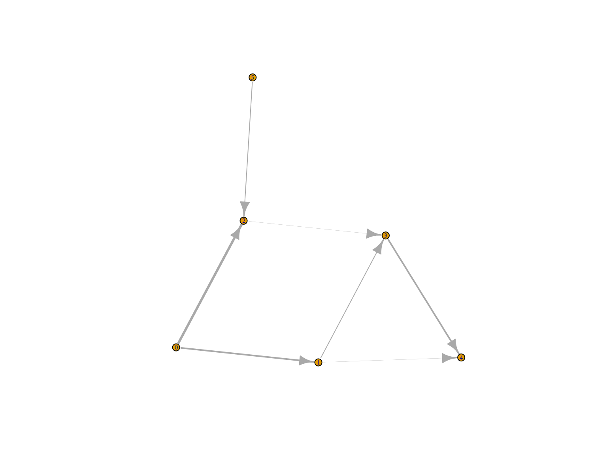

Prerequisites:
C++ boost libraries
Rcpp (>= 0.12.9)
Some of the functionality will also require the igraph package.
rpathsonpaths is not on CRAN yet, therefore for now please install the development version of the package from github:
devtools::install_github("mhinsch/rpathsonpaths")Note that this requires the package devtools installed.
What does it do?
rpathsonpaths provides functions to simulate the spread of a population in a substrate that itself is transported across a directed graph. The paradigmatic example is the spread of pathogens in food transport networks, but other instances might include for examples infections in migrating animals.
The most important functions include:
popsnetwork: create a network object from an edgelist (describing the transport graph) and a list of external sources.set_allele_freq: set the population composition in source nodes.popgen_dirichlet: simulate spread of genetic material on the network using a Dirichlet distribution to approximate genetic drift.draw_isolates: draw a number of random individuals from a set of nodes using the simulated allele frequencies.plot: plot a popsnetwork object (currently uses igraph, but more backends are planned).
Resources
Vignettes
An overview of rpathsonpaths is provided below in the worked example below. More detailed tutorials are distributed as vignettes with the package:
vignette("overview", package="rpathsonpaths")Websites
The following websites are available:
- The rpathsonpaths project on github, useful for developers, contributors, and users wanting to post issues, bug reports and feature requests:
http://github.com/mhinsch/rpathsonpaths
Getting help online
Bug reports and feature requests should be posted on github using the issue system.
A quick overview
The following worked example provides a brief overview of the package’s functionalities. See the vignettes section for more detailed tutorials.
Preparing the network
First, we prepare an edge list describing the network, and the initial state of the source nodes:
library(rpathsonpaths)
inp <- c(0L, 0L, 1L, 2L, 3L, 1L, 5L)
outp <- c(1L, 2L, 3L, 3L, 4L, 4L, 2L)
rates <- c(1, 1.5, 0.5, 0.1, 1, 0.1, 0.5)
edgelist <- data.frame(inp, outp, rates)
ext <- data.frame(c(0L, 5L), c(0.5, 0.5))Now we can create a popsnetwork object:
netraw <- popsnetwork(edgelist, ext, 0.1)
netraw
#> Nodes:
#>
#> id infected input alleles...
#> 0 0.55 1
#> 1 0.595 1
#> 2 0.595 2
#> 3 0.6355 0.6
#> 4 0.668636 1.1
#> 5 0.55 1
#>
#> Links:
#>
#> from to rate infected
#> 0 1 1 0.55
#> 0 2 1.5 0.55
#> 1 3 0.5 0.595
#> 2 3 0.1 0.595
#> 3 4 1 0.6355
#> 1 4 0.1 0.595
#> 5 2 0.5 0.55
plot(netraw)
#> Loading required namespace: igraph
Injecting initial populations and simulating spread
We set up the initial populations of the source nodes:
freqs <- matrix(c(0.1, 0.4, 0.3, 0.1, 0.2, 0.2, 0.4, 0.3), ncol=4, nrow=2)
netini <- set_allele_freqs(netraw, list(c(0L, 5L), freqs))
netini
#> Nodes:
#>
#> id infected input alleles...
#> 0 0.55 1 0.1 0.3 0.2 0.4
#> 1 0.595 1 0 0 0 0
#> 2 0.595 2 0 0 0 0
#> 3 0.6355 0.6 0 0 0 0
#> 4 0.668636 1.1 0 0 0 0
#> 5 0.55 1 0.4 0.1 0.2 0.3
#>
#> Links:
#>
#> from to rate infected
#> 0 1 1 0.55
#> 0 2 1.5 0.55
#> 1 3 0.5 0.595
#> 2 3 0.1 0.595
#> 3 4 1 0.6355
#> 1 4 0.1 0.595
#> 5 2 0.5 0.55Now we are ready to simulate spread of genetic material in the network. Note that every call to popgen_dirichlet will generally produce a different allele frequency distribution.
netdir1 <- popgen_dirichlet(netini, 1.7)
netdir1
#> Nodes:
#>
#> id infected input alleles...
#> 0 0.55 1 0.1 0.3 0.2 0.4
#> 1 0.595 1 0.0165701 0.144625 0.00473641 0.834069
#> 2 0.595 2 0.0200887 0.0601112 0.578239 0.341561
#> 3 0.6355 0.6 0.0776216 3.32041e-05 0.147576 0.774769
#> 4 0.668636 1.1 0.00124974 2.0022e-05 0.000307546 0.998423
#> 5 0.55 1 0.4 0.1 0.2 0.3
#>
#> Links:
#>
#> from to rate infected
#> 0 1 1 0.55
#> 0 2 1.5 0.55
#> 1 3 0.5 0.595
#> 2 3 0.1 0.595
#> 3 4 1 0.6355
#> 1 4 0.1 0.595
#> 5 2 0.5 0.55
netdir2 <- popgen_dirichlet(netini, 1.7)
netdir2
#> Nodes:
#>
#> id infected input alleles...
#> 0 0.55 1 0.1 0.3 0.2 0.4
#> 1 0.595 1 8.83491e-06 0.901684 0.00456828 0.0937388
#> 2 0.595 2 0.014417 0.290936 0.169947 0.524701
#> 3 0.6355 0.6 1.31466e-27 0.936172 0.0104342 0.0533934
#> 4 0.668636 1.1 0 0.999999 4.37143e-30 7.06198e-07
#> 5 0.55 1 0.4 0.1 0.2 0.3
#>
#> Links:
#>
#> from to rate infected
#> 0 1 1 0.55
#> 0 2 1.5 0.55
#> 1 3 0.5 0.595
#> 2 3 0.1 0.595
#> 3 4 1 0.6355
#> 1 4 0.1 0.595
#> 5 2 0.5 0.55Drawing samples
Finally we can draw samples from our simulated population.
samplconf <- data.frame(nodes=c(2L, 4L), N=c(10L, 10L))
draw_isolates(netdir1, samplconf)
#> node allele_0 allele_1 allele_2 allele_3
#> 1 2 1 1 6 2
#> 2 4 0 0 0 10
draw_isolates(netdir2, samplconf)
#> node allele_0 allele_1 allele_2 allele_3
#> 1 2 0 4 2 4
#> 2 4 0 10 0 0Contributors (in alphabetic order):
See details of contributions on:
https://github.com/mhinsch/rpathsonpaths/graphs/contributors
Contributions are welcome via pull requests.
Please note that this project is released with a Contributor Code of Conduct. By participating in this project you agree to abide by its terms.
Maintainer: Martin Hinsch (hinsch.martin@gmail.com)